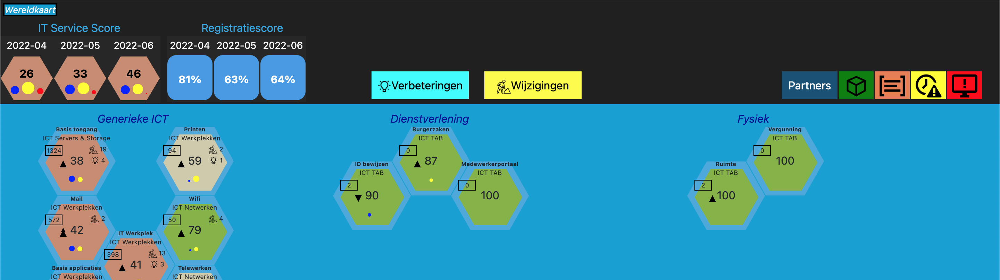

Technical Skills
- Languages: PHP, Java, Python, JavaScript, TypeScript
- Frameworks: Laravel, Spring & Spring Boot, Django, FastAPI, Flask,NodeJS, ExpressJS/NestJS, ReactJS, NextJS, Angular
- Databases: MongoDB, MySQL, PostgreSQL, SQLite, Oracle, MS Server
- Cloud Platforms: AWS (EC2, S3, Lambda, SNS ,SQS), Virtual Private Servers and CPanels
- DevOps: Docker, Kubernetes, Jenkins, Microservices(Eureka, Consul, etc)
- Other Tools: Jest, Prometheus, Grafana, PHPunit, Pytest, Google Analytics(GA4)
Notable Projects
Management Information System (M.I.S)(Developed in 6 Years and i was the Lead Developer: Microservices)
A comprehensive system named "Daily Deep Dive", designed to streamline the agricultural production lifecycle of tobacco. Built using a microservices architecture, the system efficiently integrates various technologies to support Farming, Auction Floors, Export, and Cigarette Production.
Farming Module
- Frontend: Kotlin and Flutter/Dart for mobile-first real-time data collection.
- Backend: Python for predictive analytics (e.g., crop yield, pest detection).
- APIs: REST APIs for communication between farmers and backend systems.
- Database: PostgreSQL for structured relational data storage.
- Data Warehousing: Aggregated data for analytics and real-time insights.
Auction Floors Module
- Frontend: Next.js for interactive bidding platforms.
- Backend: Node.js microservices to handle bidding and transactions.
- APIs:
- REST API: For real-time bidding and updates.
- SOAP API: For Government legacy system compatibility.
- Database: MySQL for bid transactions and payment records, using Sequelize ORM for streamlined operations.
- Monitoring:
- Prometheus: Tracks bidding activity and server performance.
- Grafana: Visualizes metrics like active bids and uptime.
Export and Cigarette Production Module
- Frontend: Next.js for logistics tracking and production dashboards.
- Backend: Node.js microservices for scheduling and quality control.
- APIs: REST APIs for inventory management and shipment tracking.
- Database:
- MongoDB: Stores unstructured shipment logs and production data.
- Reports: Data warehousing for detailed production and export summaries.
Infrastructure and Deployment
- Docker: Containerized microservices for consistent deployment.
- AWS Kubernetes (EKS): Manages containers, scales resources dynamically.
- AWS Services:
- EC2: Hosts microservices for high availability.
- S3: Stores backups, logs, and static assets.
- Lambda: Handles serverless tasks like notifications.
- SNS: Sends alerts for events such as auction results.
- SQS: Ensures reliable messaging between services.
Monitoring and Impact
- Prometheus: Tracks API response times and server health.
- Grafana: Visualizes system metrics across all modules.
- Sentry: Monitors and resolves application errors efficiently.
Impact: Streamlined operations across farming, auction floors, and production, improving efficiency by 40%, reducing shipment delays by 30%, and providing actionable insights through real-time dashboards.
Financial Service System (Developed as Lead Developer)
A robust financial service system designed to integrate with Zimbabwe's banking infrastructure, enabling seamless transactions and data management. The platform leverages cutting-edge technologies, including Next.js for frontend development, Plaid for banking data aggregation, and Java-based microservices for secure backend integration. The system is hosted on a Virtual Private Server (VPS) to ensure reliable performance and security.
Frontend Architecture
- Frontend: Next.js for building fast and dynamic user interfaces with server-side rendering and static site generation.
- UI Design: Tailwind CSS for rapid styling and a responsive layout.
- State Management: React Context API for handling global state across the application.
- Authentication: JWT Authentication for secure user login and data protection.
Backend Architecture
- Backend: Java Microservices for modularity and scalability, ensuring ease of maintenance and flexibility.
- Data Aggregation: Plaid API to securely link bank accounts and fetch transactional data.
- API Integration:
- SOAP API: Used for legacy integration with the few banking system including T24.
- REST API: For secure communication between frontend and backend services.
- Database: PostgreSQL for transactional and relational data storage.
Storage and File Handling
- Storage: Appwrite for scalable storage solutions, handling user files, and documents securely.
Infrastructure and Deployment
- VPS Hosting: The system is hosted on a Virtual Private Server for high availability, custom configurations, and cost-effectiveness.
- Docker & Kubernetes: Containerized microservices for consistent and reproducible environments.
- CI/CD: Implemented Continuous Integration/Continuous Deployment pipelines using GitHub Actions for automated testing and deployment.
Monitoring and Error Handling
- Sentry: Integrated for real-time error tracking and automated issue resolution, ensuring a seamless user experience.
- Logging: Implemented centralized logging with Logstash and Elasticsearch for efficient monitoring.
- Health Monitoring: System health and performance tracked using custom monitoring dashboards.
Security Features
- Data Encryption: All sensitive data is encrypted at rest and during transit using AES and TLS protocols.
- OAuth2 Authentication: Provides secure user access management with support for third-party login integrations.
- Role-Based Access Control (RBAC): Ensures only authorized users have access to specific system features and sensitive data.
Impact: The platform enables efficient financial data management, providing users with real-time access to their loan disbursements, while securely integrating with legacy banking systems(few selected). Enhanced user experience, improved financial data accuracy, and simplified banking processes have led to greater customer satisfaction and system reliability.
IT Audit System
Developed a comprehensive compliance monitoring tool for tracking internal system calls, ticket response times, and ensuring adherence to operational standards. The system leverages an API-driven architecture to collect and analyze data in real time, providing insights into the performance and responsiveness of internal IT operations.
System Architecture
- Frontend: ReactJS to build an interactive and responsive user interface that communicates with backend services.
- Backend: Django+Laravel to handle business logic, data processing, and secure API interactions.
- Database: PostgreSQL&MySQL used for storing system logs, ticket data, response times, and compliance records.
- API Integration: Internal System API provides the data necessary for the audit process, fetching system calls and ticket-related information in real-time.
- Real-Time Monitoring: Integrated tools that continuously monitor API calls, analyze ticket response times, and track KPIs related to system performance.
Deployment and Environment Management
- Laravel Forge: Utilized for seamless deployment and management of Laravel applications. Ensures smooth deployment of both staging and production environments.
- AWS+DevOps tools(terraform etc): The system is deployed on AWS (EC2, S3, EKS, Lambda), providing full control over server configurations and optimal performance for the application.
- Environment Setup: The application is structured into three distinct environments:
- Development: Dedicated environment for feature development, testing, and debugging.
- Staging: Pre-production environment for QA and user acceptance testing (UAT) to simulate the live system with actual data.
- Production: Live environment for end-users, ensuring the stability, scalability, and security of the system.
- CI/CD Pipeline: Continuous Integration and Deployment set up using GitHub Actions to automate testing, building, and deployment processes across all environments.
Real-Time Data Analytics
- Ticket Response Time Analysis: The system analyzes response times of support tickets, highlighting delays and ensuring that internal service level agreements (SLAs) are met.
- System Calls Monitoring: API calls are monitored in real-time to detect any anomalies, ensuring optimal performance and identifying areas for improvement.
- Octagonal Presentation: The system displays data using a visually appealing octagonal presentation style similar to Dienstenlandkaart, making it easy to understand complex data at a glance. This visual model helps track performance metrics and system health in a user-friendly way.
Security Features
- Role-Based Access Control (RBAC): Ensures that only authorized users can access sensitive audit data and system logs, with granular permissions based on user roles.
- Data Encryption: All sensitive data stored in the database is encrypted using advanced encryption standards to prevent unauthorized access, OAuth2, JWT etc.
- Secure API Communication: API calls are secured using OAuth2 authentication and encrypted with TLS, ensuring safe data exchange between the frontend and backend systems.
System Access
The actual system can be accessed via this portal where authorized users can log in to view detailed reports, ticket analytics, and system performance data.
Visual Representation
Sales and Logistics System
Implemented an inventory and route optimization system using Python(Django)+Next.js.
HR Systems
Created a GDPR-compliant HR management platform with MongoDB and Docker.
Note:
All these systems are mostly internal (both codebase and sites)owned by their respective organisations and links to the sites will be availed per request and subject to approval.
Work Experience
-
Web Developer - Staxo Group (UK) | 2024 – 2025
Backend/frontend development, deployment, and code reviews.
-
Software Engineer - Dienstenlandkaart (Netherlands) | 2018 – 2024
Developed integrated platforms and improved UI/UX.
-
Software Engineer - Haltrade Distribution | 2018 – 2024
Migrated legacy systems and optimized performance.
-
Lead Software Engineer - Inclusive Financial Services | 2017 – 2018
Led team evaluations and API development.
Contact Me
Email: timothymoswa@gmail.com
LinkedIn: Timothy Moswa